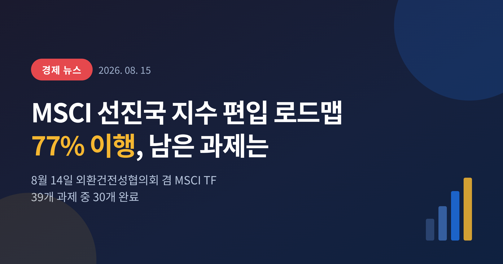
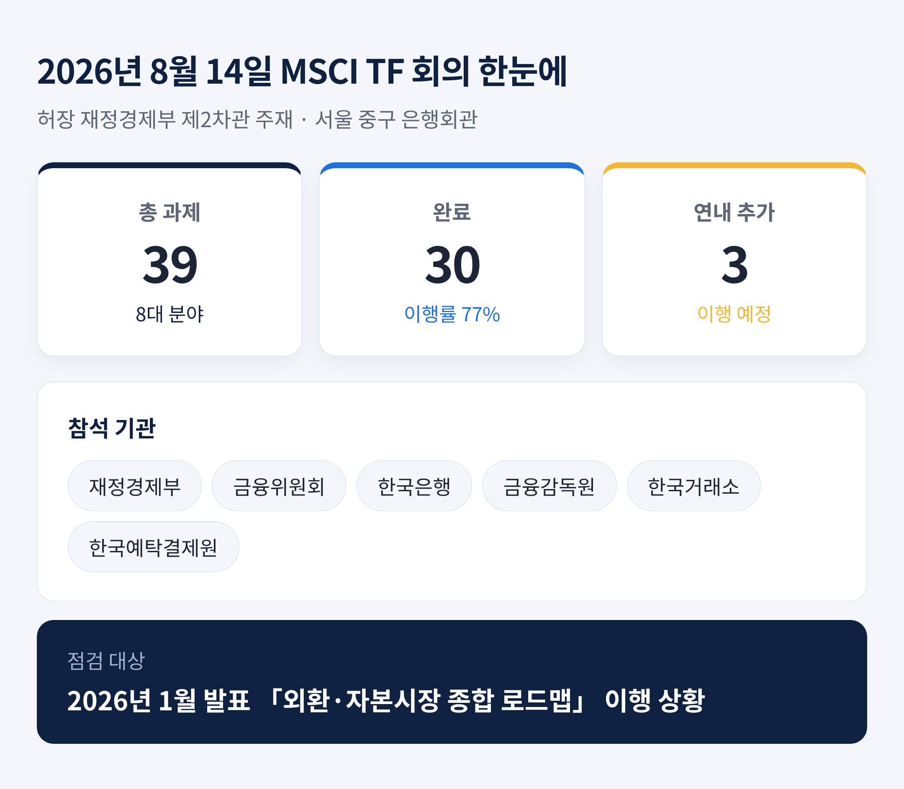
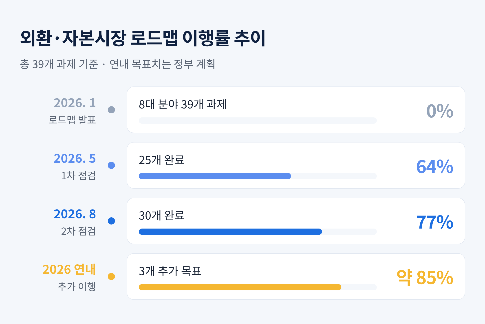
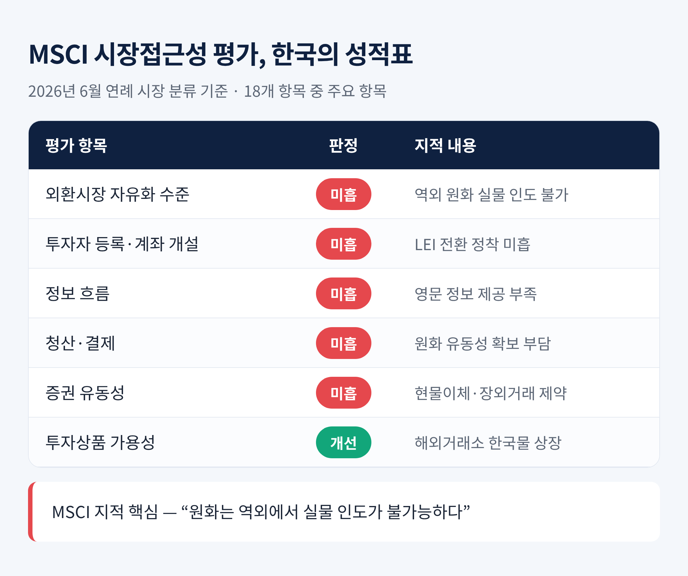
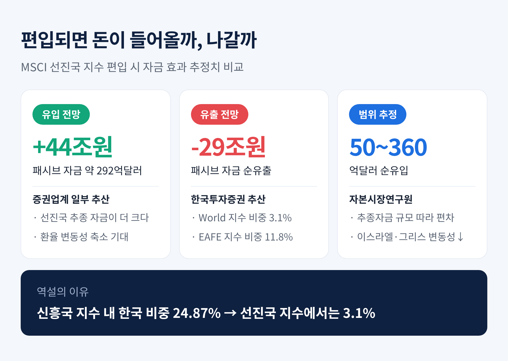
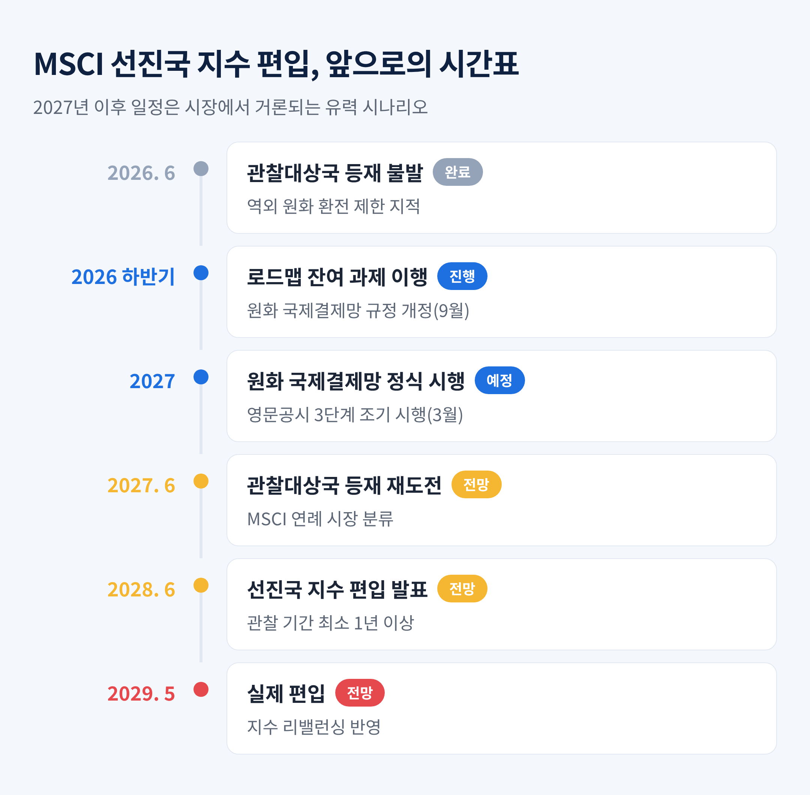

이번 글에서는 2026년 8월 14일 열린 재정경제부의 MSCI 선진국 지수 편입추진 TF 회의를 정리해 보겠습니다. 정부가 무엇을 끝냈고 무엇이 남았는지, 그리고 편입이 정말 우리 증시에 좋은 일인지까지 함께 살펴봅니다.
세 줄 요약
허장 재정경제부 제2차관이 8월 14일 서울 중구 은행회관에서 「외환건전성협의회 겸 MSCI 선진국 지수 편입추진 태스크포스(TF)」를 주재했습니다.
금융위원회, 한국은행, 금융감독원, 한국거래소, 한국예탁결제원이 자리를 함께했습니다. 의제는 하나였습니다. 올해 1월 발표한 「MSCI 선진국 지수 편입을 위한 외환·자본시장 종합 로드맵」이 어디까지 왔는지 점검하는 일입니다.
결과는 이렇습니다. 8대 분야 39개 과제 가운데 30개가 완료됐습니다. 이행률로는 77%입니다. 정부와 관계기관은 연내 3개 과제를 추가로 이행하겠다고 밝혔습니다.
속도만 놓고 보면 나쁘지 않습니다. 지난 5월 21일 같은 장소에서 열린 직전 점검 때는 25개(64%) 완료였습니다. 석 달 만에 13%포인트를 더 채운 셈입니다.

첫째, 한국은행원화국제결제망입니다.
지금까지 외국인 투자자가 한국 주식을 사려면 국내에 원화 계좌를 열어야 했습니다. 앞으로는 그럴 필요가 없어집니다. 해외 금융기관을 통해 원화를 보유하고 이체하며, 국내 증권 결제에까지 쓸 수 있게 하는 체계입니다.
정부는 이를 위해 「외국환거래규정」 등을 9월까지 개정합니다. 이후 시범운영을 거쳐 2027년 정식 시행할 계획입니다.
둘째, 전자 외환거래(e-FX) 가이드라인입니다.
e-FX는 전자적으로 가격 정보를 주고받고 자동으로 주문을 체결하는 외환거래 방식입니다. 이달 중 배포될 가이드라인에는 알고리즘 거래 시 지켜야 할 시스템 안정성과 내부통제 기준이 담깁니다. 은행·증권사가 스스로 점검할 체크리스트도 함께 제공됩니다.
목적은 분명합니다. 밤새 사람이 지키고 앉아 있지 않아도 외환거래가 돌아가게 만드는 것입니다. 야간 인력과 비용 부담이 줄면 심야 거래가 늘어난다는 계산입니다.
셋째, 증권결제 원화 유동성 부담을 덜어주는 조치입니다.
지금까지 예탁결제원 결제촉진대금은 현금으로만 낼 수 있었습니다. 9월부터는 주식과 채권으로도 납부할 수 있게 됩니다. 10월부터는 장내시장에서 받을 예정인 증권까지 담보로 인정합니다.
작아 보이지만, 금융기관이 하루 중에 확보해야 하는 원화 유동성 부담을 실질적으로 줄이는 조치입니다.
7월 6일부터 국내 원·달러 외환시장이 24시간 무중단으로 열렸습니다. 예전엔 오전 9시부터 오후 3시 30분까지였습니다. 지금은 월요일 아침부터 토요일 아침까지 멈추지 않습니다.
숫자로 확인된 변화가 있습니다. 은행 간 현물환 일평균 거래량이 올해 상반기 173억9000만달러에서 24시간 운영 이후 191억4000만달러로 늘었습니다. 10.1% 증가입니다.
다만 정부도 한계를 인정했습니다. 심야 거래가 늘어나는 속도는 아직 완만하다는 평가입니다. 그래서 원·달러 시장 선도은행을 뽑을 때 심야 거래량에 더 높은 가중치를 주기로 했습니다. 밤 10시부터 다음 날 오전 6시 사이 거래에는 주간 거래의 3배 가중치를 부여하는 방안이 제시된 것으로 알려졌습니다.

한국 증시는 1992년부터 MSCI 신흥시장에 속해 있습니다. 2008년 선진국 지수 편입 전 단계인 관찰대상국에 올랐지만, 2014년 다시 명단에서 빠졌습니다. 원화의 낮은 태환성, 복잡한 투자자 식별 시스템, 거래소 데이터 활용 제한이 이유였습니다.
MSCI는 세 가지를 봅니다. 경제발전 단계, 시장 규모와 유동성, 그리고 시장접근성입니다. 한국은 앞의 두 가지를 이미 충족했습니다. 걸리는 것은 언제나 세 번째입니다.
시장접근성은 5개 부문 18개 세부 항목으로 평가됩니다. 올해 6월 23일(현지시간) 발표된 연례 시장 분류에서 한국은 또 관찰대상국에 오르지 못했습니다.
MSCI가 든 이유는 날카로웠습니다. "원화는 역외에서 실물 인도가 불가능하다"는 것입니다. 지금 원화는 해외에서 차액만 달러로 정산하는 역외차액결제선물환 위주로 거래됩니다. 진짜 원화가 오가는 시장이 없다는 뜻입니다.
18개 항목 가운데 5개가 여전히 '미흡'으로 남았습니다. 외환시장 자유화 수준, 투자자 등록과 계좌 개설, 정보 흐름, 청산·결제, 증권 유동성입니다. 반면 투자상품 가용성 항목은 상향 평가를 받았습니다.
MSCI의 원칙도 짚어둘 필요가 있습니다. "모든 문제가 해결되고, 개혁이 완전히 시행되었으며, 시장 참여자들이 변화의 효과를 충분히 평가할 시간이 주어졌을 때" 재분류 협의를 시작한다는 입장입니다. 제도를 만든 것만으로는 부족하고, 외국인이 실제로 체감해야 한다는 이야기입니다.

여기서부터 의견이 갈립니다. 그리고 그 차이가 꽤 큽니다.
들어온다는 쪽은 패시브 자금 기준 약 292억달러, 우리 돈 44조원가량이 유입될 수 있다고 봅니다. 선진국 지수를 추종하는 자금 규모 자체가 신흥국 지수보다 훨씬 크다는 논리입니다. 환율 변동성이 줄고 코리아 디스카운트가 완화될 것이라는 기대도 함께 붙습니다.
나간다는 쪽의 계산은 정반대입니다. 한국투자증권 시뮬레이션에 따르면 선진국으로 재분류될 경우 MSCI World 지수 내 한국 비중은 3.1%로 줄어듭니다. 일본 5.5%, 영국 3.4%, 캐나다 3.3%에 이은 5위 수준입니다. EAFE 지수에서도 11.8%로 3위에 머뭅니다. World와 EAFE 추종 펀드에서 들어오는 자금은 각각 73조원, 109조원인데, 신흥국 지수에서 빠져나가는 자금이 더 커서 결과적으로 약 29조원의 패시브 자금 순유출이 발생한다는 추산입니다.
이 역설의 뿌리는 한국 증시가 그동안 너무 잘나갔다는 데 있습니다. MSCI 신흥국 지수 내 한국 비중은 2020년 2분기 말 12%에서 올해 6월 24.87%까지 올랐습니다. 대만(27.01%)에 이어 2위이고, 중국(18.67%)을 앞섰습니다. 연못에서 가장 큰 물고기가 바다로 나가면, 바다에서는 작은 물고기가 됩니다.
자본시장연구원은 순유입 효과를 50억~360억달러 범위로 추정했습니다. 범위가 이렇게 넓다는 것 자체가 불확실성의 크기를 보여줍니다. 다만 이스라엘과 그리스 사례에서는 편입 이후 외국인 자금 유출입과 주가의 변동성이 줄어드는 효과가 확인됐습니다. 두 나라 모두 이동 과정에서 리밸런싱에 따른 자금 유출은 겪었습니다.

한국만 겪는 일이 아닙니다.
대만도 경제발전 단계와 시장 규모에서는 진작 선진국 기준을 채웠습니다. 그런데 통화의 완전한 태환성이 없고 역외 통화시장이 없다는 이유로 발이 묶였습니다. MSCI는 2014년 한국과 대만을 함께 관찰대상국 명단에서 뺐습니다.
그로부터 12년이 흘렀습니다. 대만은 지금도 신흥국에 남아 있습니다.
한국이 받은 지적, 즉 '역외에서 원화 실물 인도가 안 된다'는 문제는 대만이 겪은 것과 본질이 같습니다. 이번 로드맵의 무게중심이 원화 국제결제망과 24시간 외환시장에 실린 이유가 여기 있습니다.
시장에서 유력하게 거론되는 시나리오는 이렇습니다. 2027년 6월 관찰대상국 등재, 2028년 6월 편입 발표, 2029년 5월 말 실제 편입입니다. 관찰 기간만 최소 1년 이상이 필요하기 때문입니다.
바꿔 말하면 지금 논의는 3년 뒤를 준비하는 작업입니다. 당장의 수급 재료로 읽기에는 거리가 멉니다.
남은 과제도 만만치 않습니다. 영문공시 3단계 의무화는 당초 2028년에서 2027년 3월로 앞당길 예정이지만, MSCI는 기업 정보가 영어로 원활히 제공되지 않는다는 점을 여전히 지적하고 있습니다. 배당 절차 개선도 2024년부터 시행됐으나 2024년 12월 기준 정관을 고친 기업은 30% 수준에 그쳤습니다. 제도는 있는데 참여가 저조한 것입니다.
한편 이날 회의에서는 다른 이야기도 나왔습니다. 허 차관은 "금년 2분기말 기준 코스피가 1분기말 대비 68% 상승(5052포인트 → 8476포인트)함에 따라 2분기 순대외금융자산 규모가 대폭 감소할 것으로 예상되지만, 이는 우리 경제의 대외건전성 악화와는 관계가 없다"고 밝혔습니다. 외국인이 보유한 국내 주식 가치가 커져서 생긴 회계적 결과일 뿐, 경상수지 적자나 대외차입 확대 같은 펀더멘털 문제가 아니라는 설명입니다.

정리하면 이렇습니다.
정부는 39개 과제 중 30개를 끝냈고, 남은 것은 원화를 해외에서 실제로 쓸 수 있게 만드는 마지막 관문입니다. 제도는 빠르게 갖춰지고 있습니다. 다만 MSCI가 보는 것은 제도의 개수가 아니라 시장의 체감입니다.
그리고 편입 자체가 답이 아닐 수도 있습니다 — 신흥국에서 4분의 1을 차지하던 나라가 선진국에서 3%짜리 나라가 되는 일이기도 하니까요.
그래도 방향은 옳다고 생각합니다. 원화가 해외에서 자유롭게 오가는 통화가 되는 일은, MSCI 편입 여부와 무관하게 우리 경제가 언젠가 넘어야 할 문턱입니다. 지수는 결과이지 목적이 아닙니다.
3년 뒤 한국 증시가 어디에 서 있을지 물으신다면, 지금 만들어지는 결제망의 실제 사용량이 그 답을 먼저 알려줄 것이라고 답하겠습니다.
이 글은 공개된 보도자료와 언론 보도를 바탕으로 정리한 정보 제공 목적의 글이며, 특정 종목이나 자산에 대한 투자 권유가 아닙니다. 투자 판단과 그 결과에 대한 책임은 투자자 본인에게 있습니다.